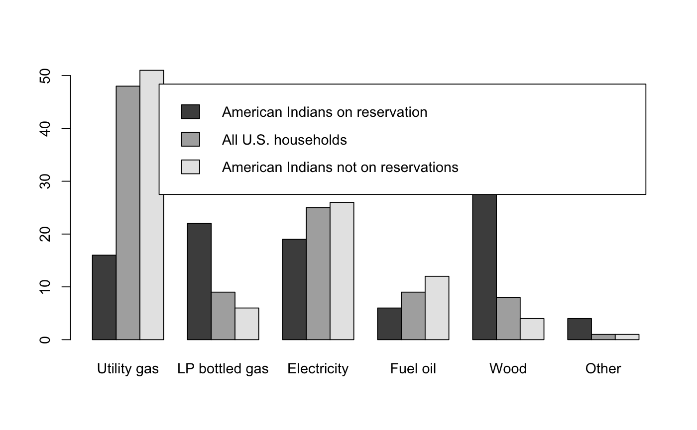

Data for Exercise 1.29
Heat
A data frame/tibble with 301 observations on two variables
a factor with levels Utility gas,
LP bottled gas, Electricity, Fuel oil, Wood, and
Other
a factor with levels American Indians on reservation,
All U.S. households, and American Indians not on reservations
Bureau of the Census, Housing of the American Indians on Reservations, Statistical Brief 95-11, April 1995
Kitchens, L. J. (2003) Basic Statistics and Data Analysis. Duxbury
T1 <- xtabs(~ fuel + location, data = Heat) T1#> location #> fuel American Indians on reservation All U.S. households #> Utility gas 16 48 #> LP bottled gas 22 9 #> Electricity 19 25 #> Fuel oil 6 9 #> Wood 34 8 #> Other 4 1 #> location #> fuel American Indians not on reservations #> Utility gas 51 #> LP bottled gas 6 #> Electricity 26 #> Fuel oil 12 #> Wood 4 #> Other 1barplot(t(T1), beside = TRUE, legend = TRUE)# NOT RUN { ggplot2::ggplot(data = Heat, aes(x = fuel, fill = location)) + geom_bar(position = "dodge") + labs(y = "percent") + theme_bw() + theme(axis.text.x = element_text(angle = 30, hjust = 1)) # }